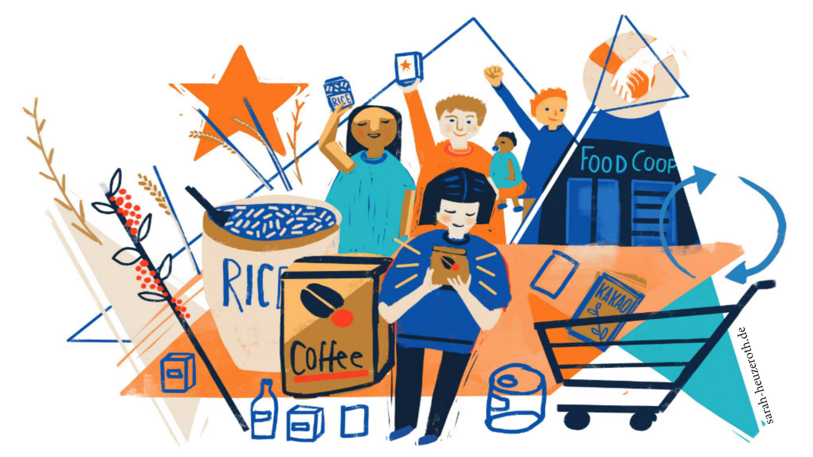

Mehr als Lebensmittel. Eine Gemeinschaft.
Regional einkaufen. Verantwortung teilen. Gemeinschaft leben.

Regional + Biologisch + Verpackungsarm + Solidarisch + Selbstorganisiert
Über uns
LeKo ist eine Lebensmittelkooperative aus Weimar, die von Menschen getragen wird, die gemeinsam nachhaltige Lebensmittel einkaufen.
Durch gemeinsame Großbestellungen können wir faire, regionale und biologische Produkte beziehen und gleichzeitig Verpackungsmüll reduzieren.
Unsere Werte
🌾 Fair
Gemeinsam einkaufen und faire Produkte unterstützen.
🌱 Biologisch
Nachhaltige Lebensmittel mit Verantwortung.
🤝 Gemeinschaft
Menschen verbinden und gemeinsam handeln.
♻️ Weniger Müll
Eigene Behälter nutzen und Verpackungen reduzieren.
Unsere Gemeinschaft
LeKo ist mehr als ein Laden. LeKo ist eine Gemeinschaft von Menschen, die gemeinsam Verantwortung übernimmt.
Unsere Mitglieder beteiligen sich aktiv an der Organisation der Kooperative. Durch Mitgliederversammlungen und verschiedene Arbeitsgruppen gestalten wir unsere Lebensmittelversorgung gemeinsam.
🚚 AG Lieferung
Organisation der Lieferungen und Verteilung der Waren.
👥 AG Mitglieder
Begleitung neuer Mitglieder und Pflege der Gemeinschaft.
💶 AG Finanzen
Verwaltung und Organisation der finanziellen Bereiche.
💚 AG Care
Kommunikation, Unterstützung und Miteinander.
Was wir anbieten & Wie wir entscheiden
Gemeinsam wählen wir Produkte und Produzenten aus, die zu unseren sozialen und ökologischen Werten passen.
- Getreide
- Flocken
- Mehl
- Bohnen & Hülsenfrüchten
- Trockenfrüchte
- Verschiedene Teesorten
- Verschiedene Kaffeesorten
- Pfeffer
- Salz
- Kummin
- Brotaufstriche
- Öle
- Essige
- Tomatenpassata
- Pflanzliche Milche & Sahne
- Säfte
- Wäschepflege
- Küchenpflege
- Bad & WC
- Handseife
Geschichten aus der LeKo
Hier möchten wir künftig Erinnerungen, Erfahrungen und Geschichten unserer Mitglieder teilen.
Unser Netzwerk
Gemeinsam mit regionalen Produzent:innen und Initiativen setzen wir uns für eine nachhaltige und solidarische Lebensmittelversorgung ein.
Mitglied werden
Du möchtest die LeKo kennenlernen und Teil unserer Gemeinschaft werden? Wir freuen uns auf dich.